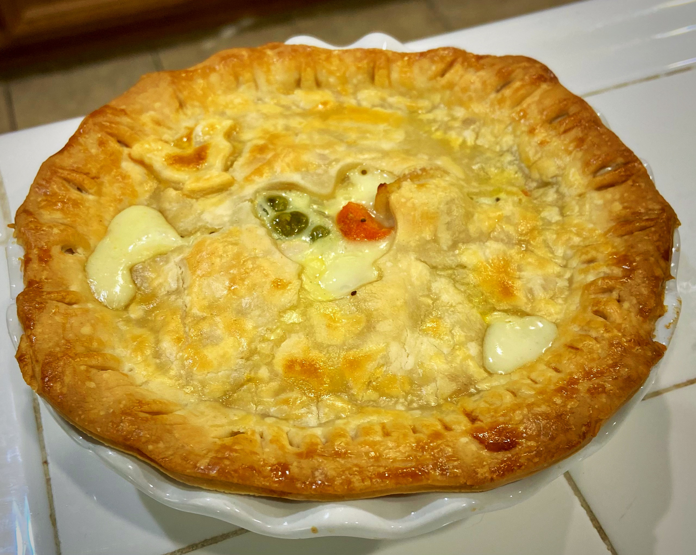
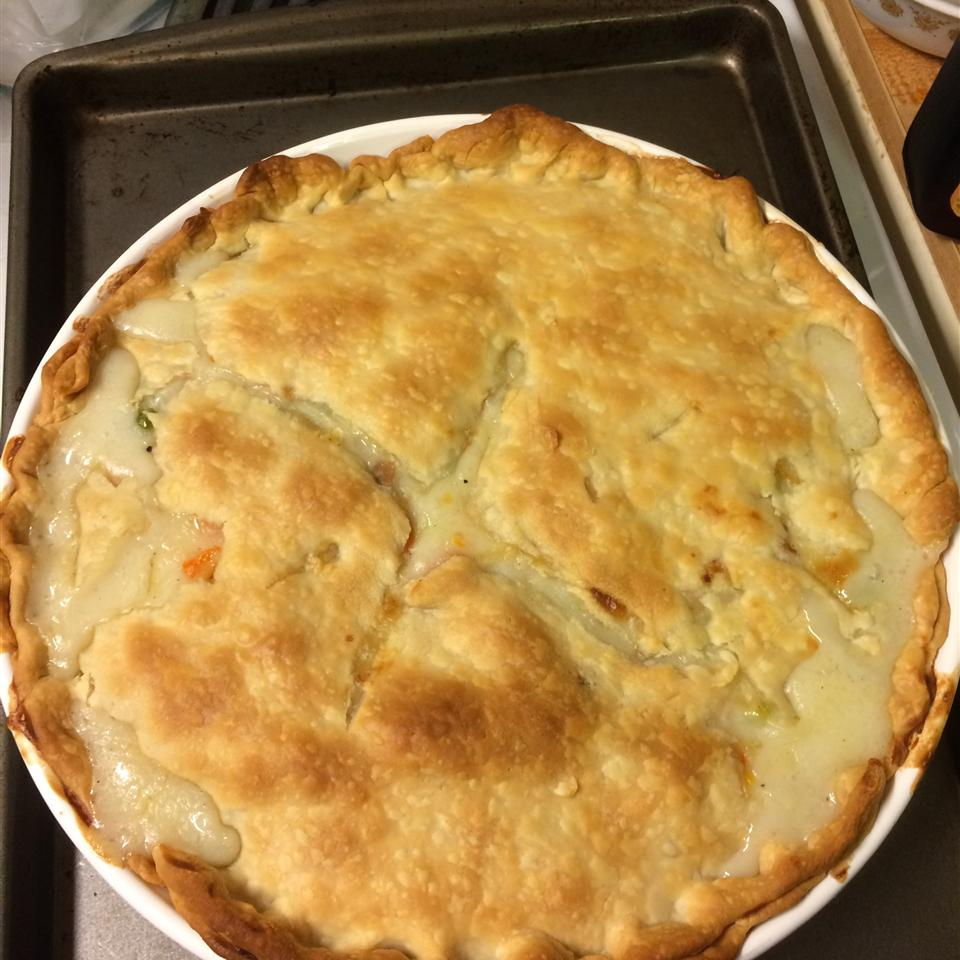
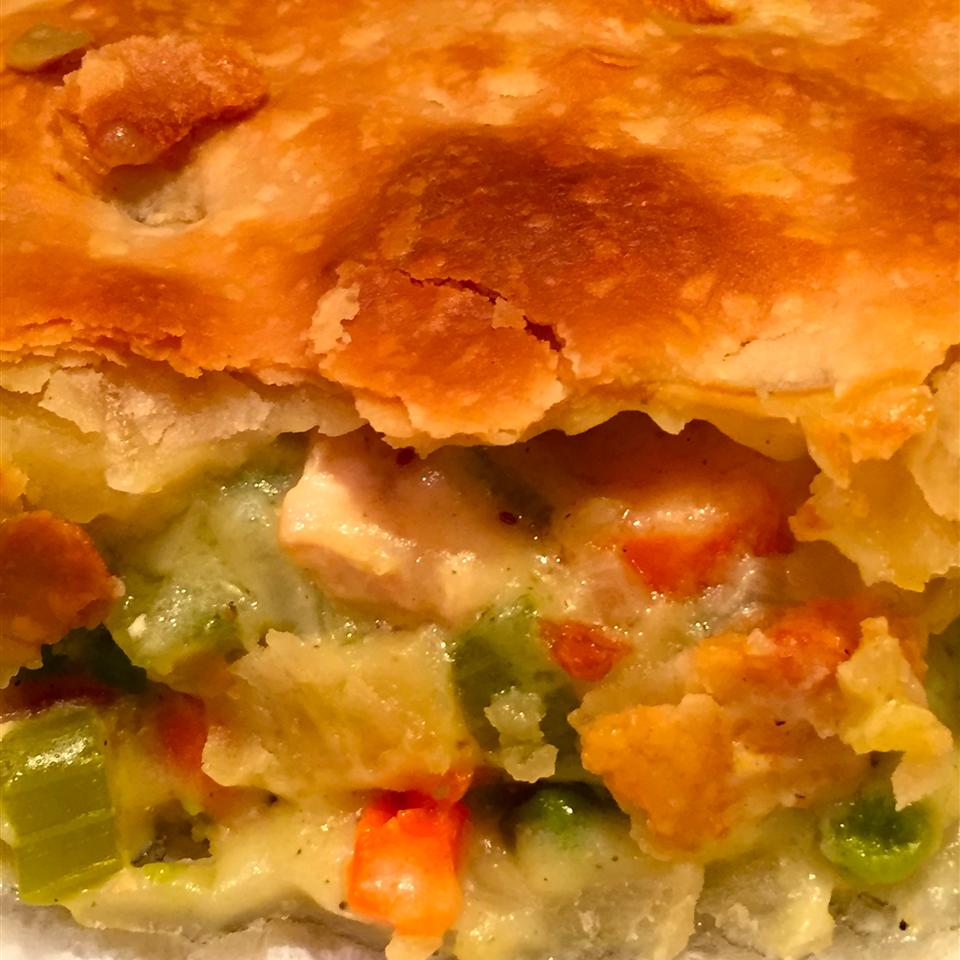

CHICKEN POT PIE



DESCRIPTION
This is my mom's recipe for Sloppy Joes and it always gets compliments! Made with lean ground beef and common pantry items, these crowd-pleasing Sloppy Joe sandwiches will take you back to your childhood.

INGREDIENTS
- 1 pound skinless, boneless chicken breast halves - cubed
- 1 cup sliced carrots
- 1 cup frozen green peas
- ½ cup sliced celery
- ⅓ cup butter
- ⅓ cup chopped onion
- ⅓ cup all-purpose flour
- ½ teaspoon salt
- ¼ teaspoon black pepper
- ¼ teaspoon celery seed
- 1 ¾ cups chicken broth
- ⅔ cup milk
- 2 (9 inch) unbaked pie crusts
DIRECTIONS
- Preheat the oven to 425 degrees F (220 degrees C.)
- Combine chicken, carrots, peas, and celery in a saucepan; add water to cover and bring to a boil. Boil for 15 minutes, then remove from the heat and drain.
- While the chicken is cooking, melt butter in another saucepan over medium heat. Add onion and cook until soft and translucent, 5 to 7 minutes. Stir in flour, salt, pepper, and celery seed. Slowly stir in chicken broth and milk. Reduce heat to medium-low and simmer until thick, 5 to 10 minutes. Remove from heat and set aside.
- Place chicken and vegetables in the bottom pie crust. Pour hot liquid mixture over top. Cover with top crust, seal the edges, and cut away any excess dough. Make several small slits in the top crust to allow steam to escape.
- Bake in the preheated oven until pastry is golden brown and filling is bubbly, 30 to 35 minutes. Cool for 10 minutes before serving.